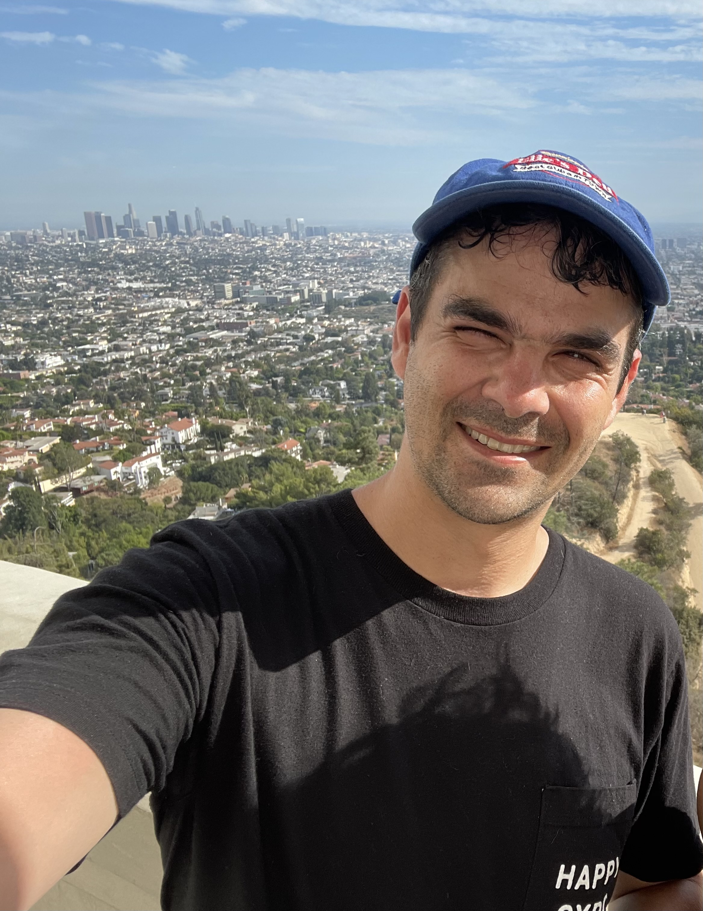

Marty Wood

Lanuages and Skills
JS | React | Node.js | Express | Next.js | MongoDB | NoSQL | Git | Bootstrap | HTML | CSS | Restful APIs | AWS | Jest | SQL | mySQL | GraphQL | Firebase | Docker | Mapbox | DevOps | Heroku | Digital Ocean | Strapi | Render | Vercel | GitHub
Projects
- Full Stack Restaurant Application
- Food ordering app with Next.js, GraphQL, Strapi DB, Stripe order integration and authentication.
- Discover restaurants, add dishes to your cart and order meals by submitting a credit card payment.
- Next.js deployed to Vercel, backend Strapi source code deployed to Render.
- Front End Banking Application
- Created React standalone application to design and build front end with routing, context, tracking state, handling events and Bootstrap styling to create a dynamic single page web application.
- Deployed to Amazon AWS S3 bucket for public accessibility.
Education and Certifications
- Web Development Bootcamp - Dr. Angela Yu - Udemy (2024)
- Professional Certificate in Coding: Full Stack Development with MERN - MIT xPRO (2023)
- Bachelor of Science, Finance - Virginia Tech (2007-2011)
Professional Experience
- MIT xPRO Full Stack Development with MERN
2023
- 32 week certificate program focused on JavaScript MERN stack, web/application development.
- Gained foundational understanding of fundamental programming concepts by replicating real-world scenarios.
- Communicated issues and solutions with cohort through Slack and weekly discussion posts.
- Day Trader - Self-Employed
2013 - Present
- Equity swing trading & covered call options strategies using Fidelity Active Trader Pro (ATP).
- Manage family portfolio with the goal of wealth preservation and capital appreciation.
- Sales Operations Analyst/ Business Development Associate - Unanet
2019 - 2021
- Integrated GoCloudz into Salesforce. Built volume-based tiered pricing and price books. Dramatically reduced the time required to generate proposals by over 95%, from hours to minutes.
- Developed, tested, and deployed automation using Process and Flow Builder. Streamlined 30+ business processes and overall enhanced user productivity by pre-filling forms.
- Created and maintained reports/dashboards for 35-40 colleagues and trained users to track KPIs in real-time, e.g., ACV (pipe, commit, won), quotas, W/L %, prospecting activities, and at-risk customers.
- Implemented change control management process. User groups can submit suggestions, add supporting documentation, and track Sales Ops projects in a centralized location.
Other